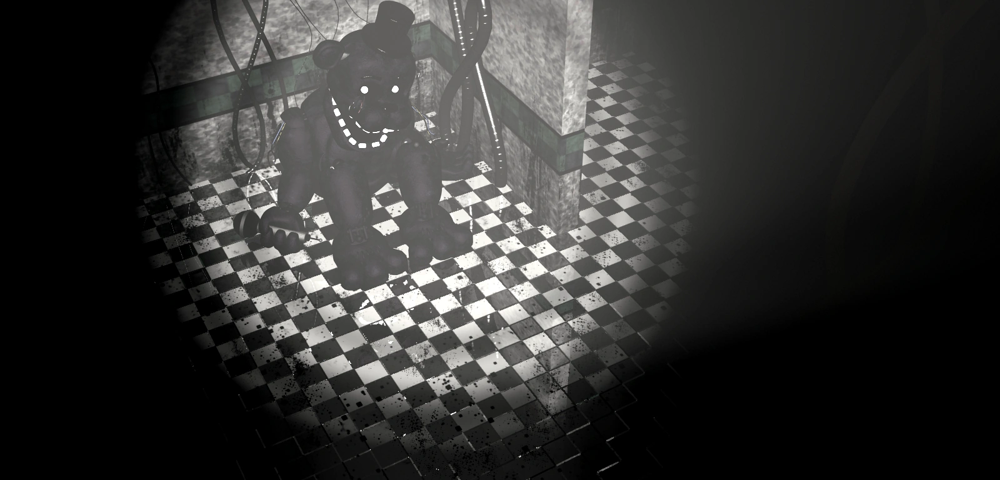
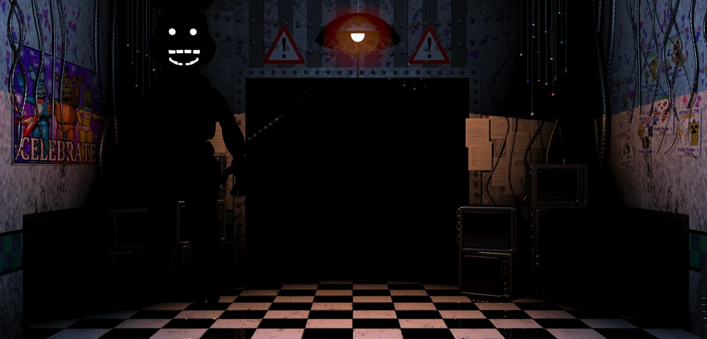
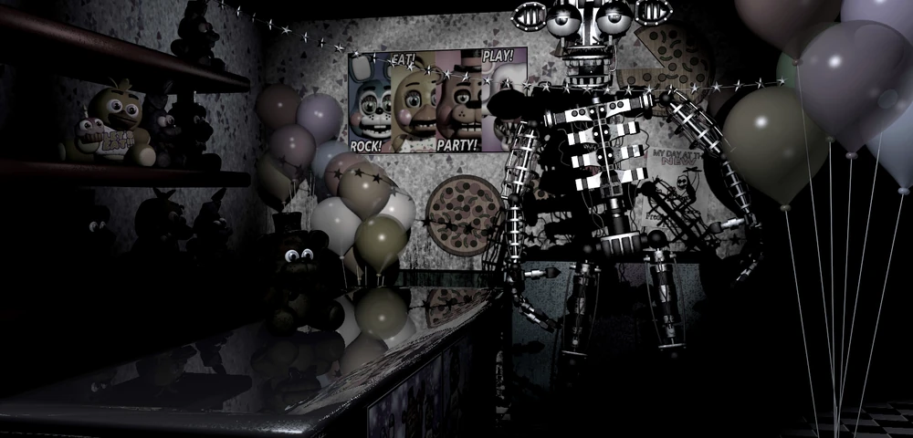
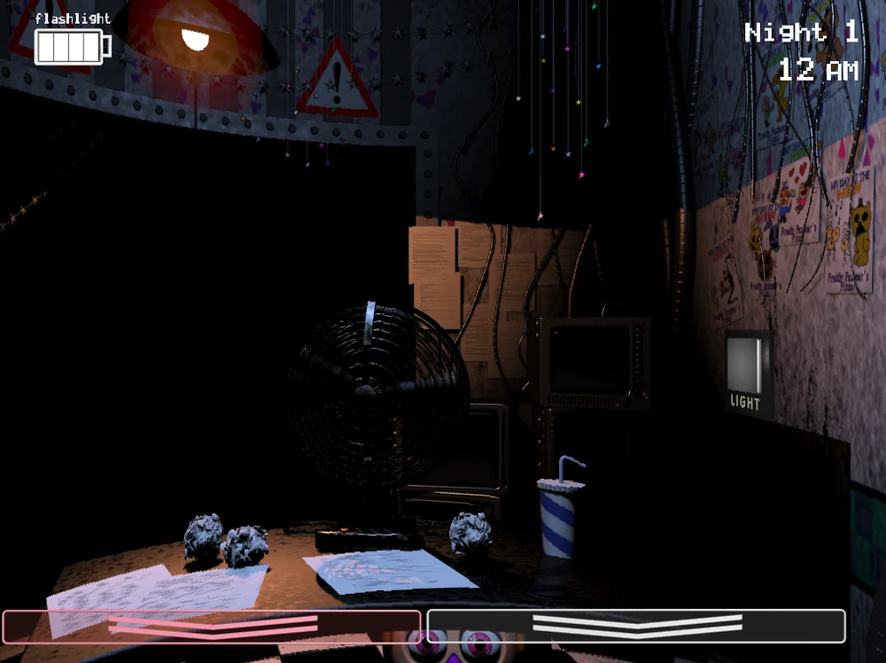
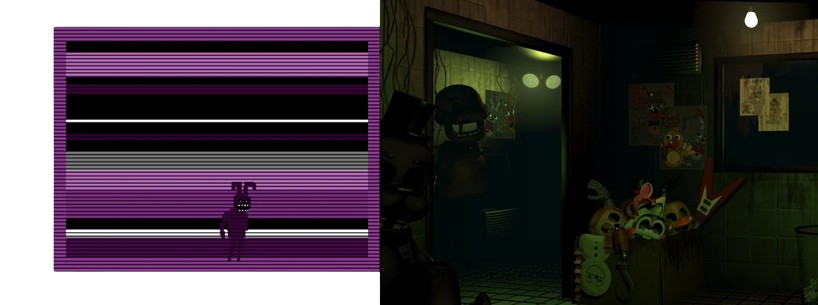
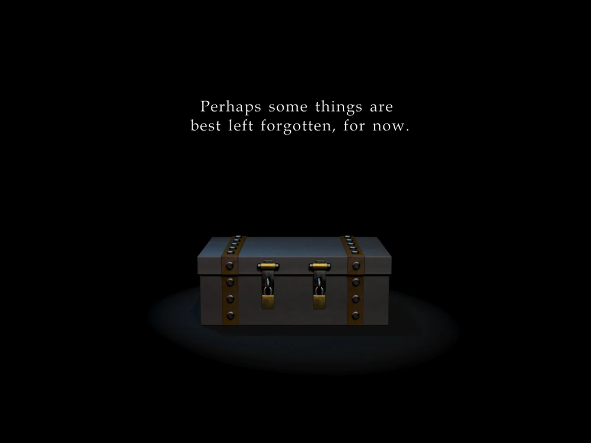
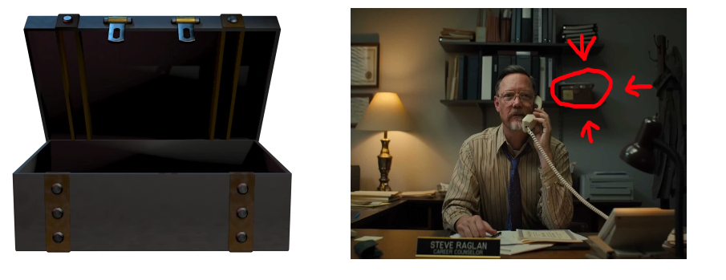
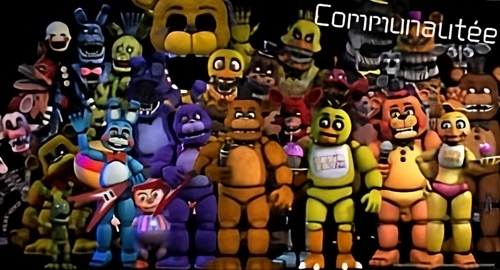

FNaF 2 comporte plein d'easter eggs tous différents les uns des autres, comparé à FNaF 3 qui en comporte très peu car tous les fans ont trouvé le lien avec le lore du jeu
FNaF 2 comporte des animatroniques dont l'origine est inconnue, comme par exemple Shadow Freddy, comparé à Golden Freddy dans FNaF 1, où l'on sait qu'il se trouve dans la cuisine ou dans la salle des pièces détachées

Il existe une autre version sombre d'un animatronique, il s'agit de Shadow Bonnie ou RWQFSFASXC, qui ressemble à Toy Bonnie mais en noir. Si Shadow Bonnie apparaît, il sera déjà trop tard à moins que vous ne leviez votre moniteur, n'allumiez votre lampe torche ou ne mettiez votre masque, car s'il apparaît dans votre bureau et que vous ne faites rien pendant 4 secondes, il fera crasher votre jeu. C'est le cauchemar des speedrunners

Il y a aussi une petite chance de voir un endosquelette sur la boîte de Puppet. Personne ne sait à qui appartient cet endosquelette, mais il est là. Certains disent que c'est l'ancien endosquelette de Golden Freddy, mais bon...

Il reste un dernier animatronique dans FNaF 2, et personne ne sait d'où elle vient. Elle s'appelle JJ. Elle apparaît sous votre bureau et vous observe... C'est tout, elle vous observe simplement

Pour finir cette partie, nous allons voyager en 2023, lors de FNaF 3. FNaF 3 ramène principalement tous les animatroniques de FNaF 1 et certains de FNaF 2 : Chica, Freddy, Puppet, Mangle, Balloon Boy (personne ne l'aime, BB) et Foxy. Et comme par hasard, au milieu de tout cela, notre cher Shadow Freddy est encore là. Mais il y a aussi Shadow Bonnie dans un mini-jeu, c'est étrange...

Nous allons commencer par l'easter egg qui n'en est pas vraiment un, mais qui reste tout de même très mystérieux. Je parle bien sûr du coffre à la fin de la nuit 7, aussi appelée la Nuit Nightmare

Ce coffre, on le retrouve également dans FNaF World en tant que fichier inutilisé. Le sprite du coffre est ouvert cette fois-ci, mais on ne saura jamais ce qu'il contient. On voit aussi ce coffre en tant qu'easter egg dans le film FNaF, dans le bureau de Steve RAGLAN/William AFTON, sur une étagère, fermé, comme dans FNaF 4

